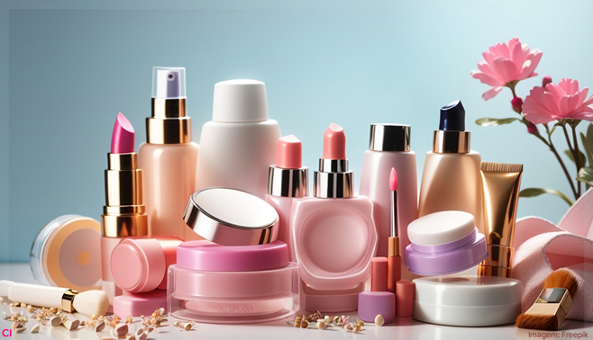

Produtos de Beleza

Até 2031, o mercado global de cosméticos deverá ser avaliado em 663 mil milhões de dólares (613 mil milhões de euros), com uma taxa de crescimento anual de 5%, conforme afirma um relatório da empresa de estudos de mercado Transparency Market Research.
O setor mundial da beleza, que deverá atingir os 451 mil milhões de dólares até ao final de 2023, em comparação com os 432 mil milhões de dólares do ano anterior, será particularmente impulsionado pelo segmento de cuidados da pele em rápido crescimento, bem como pela ascensão da região Ásia-Pacífico..
Utilidades Domesticas

O comércio de utilidades domésticas no Brasil movimentou R$96,3 bilhões em 2022, em mais de 238 mil pontos de venda. O segmento tem crescido muito nos últimos anos, devido à reconexão das pessoas com suas casas durante a pandemia.
Lojas de utilidades domésticas podem vender produtos de vidro, metal, plástico e outros materiais, além de itens de papelaria, brinquedos e presentes.